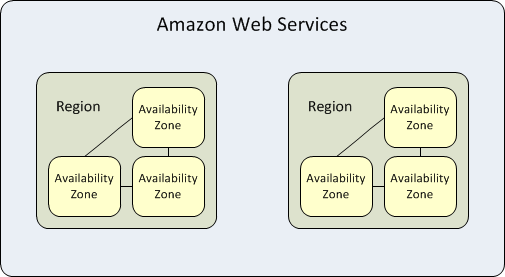

AWS Basics
Simple intro and Code Sharing
Created by
Li Tongxin
Summary
Before start ...
ABC Learning
Let's code review
Regions and Availability Zones
44 Availability Zones within 16 geographic Regions

Why use muti AZs deployment?
High Availability
Fault Tolerance
Low Latency
Identity and Access Management
Identities (Users, Groups and Roles)
AccessKeyId and SecretAccessKey
Request VS Policy
Grant least privilege
Actions defined by service